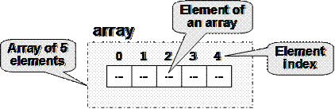
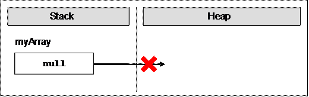
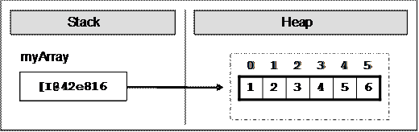
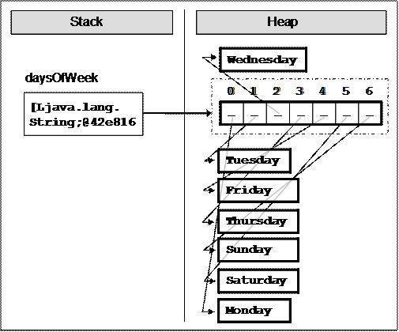
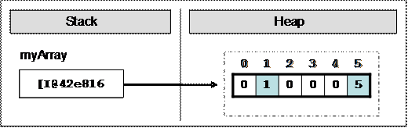
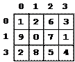
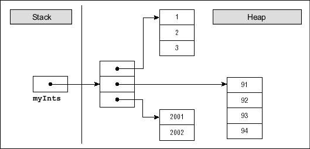
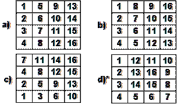
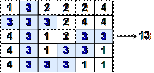

Настоящият текст е част от книгата на Светлин Наков и колектив:
Въведение в програмирането с Java
Можете да изтеглите цялата книга безплатно от www.introprogramming.info.
Настоящият текст е част от книгата на Светлин Наков и колектив:
Можете да изтеглите цялата книга безплатно от www.introprogramming.info.
Мариян Ненчев
Светлин Наков
В настоящата тема ще се запознаем с масивите като средства за обработка на поредица от еднакви по тип елементи. Ще обясним какво представляват масивите, как можем да декларираме, създаваме и инициализираме масиви. Ще обърнем внимание на едномерните и многомерните масиви. Ще разгледаме различни начини за обхождане на масив, четене от стандартния вход и отпечатване на стандартния изход. Ще дадем много примери за задачи, които се решават с използването на масиви и ще ви покажем колко полезни са те.
Масивите са неизменна част от езиците за програмиране. Те представляват съвкупности от променливи, които наричаме елементи:

Елементите на масивите са номерирани с числата 0, 1, 2, ... N-1. Тези номера на елементи се наричат индекси. Броят елементи в даден масив се нарича дължина на масива.
Всички елементи на даден масив са от един и същи тип, независимо дали е примитивен или референтен. Това ни помага да представим група от еднородни елементи като подредена свързана последователност и да ги обработваме като едно цяло.
Масивите могат да бъдат от различни размерности, като най-често използвани са едномерните и двумерните масиви. Едномерните масиви се наричат още вектори, а двумерните матрици.
В Java масивите имат фиксирана дължина, която се указва при инициализирането му и определя броя на елементите му. След като веднъж сме задали дължината на масив не е възможно да я променяме.
Масиви в Java декларираме по следния начин:
int[] myArray; |
Тук променливата myArray е името на масива, който е от тип (int[]) т.е. декларирали сме масив от цели числа. С [] се обозначава, че променливата, която декларираме ще е масив, а не единичен елемент.
При декларация името на променливата, която е от тип масив, представлява референция (reference), която сочи към null, тъй като още не е заделена памет за елементите на масива.
Ето как изглежда една променлива от тип масив, която е декларирана, но още не е заделена памет за елементите на масива:

В стека за изпълнение на програмата се заделя променлива с име myArray и в нея се поставя стойност null (липса на стойност).
В Java масив се създава с ключовата дума new, която служи за заделяне (алокиране) на памет:
int[] myArray = new int[6]; |
В примера заделяме масив с размер 6 елемента от целочислен тип. Това означава, че в динамичната памет (heap) се заделя участък от 6 последователни цели числа:
Картинката показва, че след заделянето на масива променливата myArray сочи някакъв адрес (0x42e816) в динамичната памет, където се намира нейната стойност. Елементите на масивите винаги се съхраняват в динамичната памет (в т. нар. heap).
При заделянето на масив в квадратните скоби задаваме броя на елементите му (цяло неотрицателно число) и така се фиксира неговата дължина. Типът на елементите се пише след new, за да се укаже за какви точно елементи трябва да се задели памет. Масив с вече зададена дължина не може да се промени т.е. масивите са с фиксирана дължина.
Преди да използваме елемент от даден масив той трябва да има начална стойност. В някои езици за програмиране не се задават начални стойности по подразбиране, и тогава при опит за достъпване да даден елемент възниква грешка. В Java всички променливи, включително и елементите на масивите имат начална стойност по подразбиране (default initial value)> Тази стройност е равна на 0 при числените типове или неин еквивалент при нечислени типове (например null за обекти и false за булевия тип).
Разбира се, начални стойности можем да задаване и изрично. Това може да стане по различни начини. Един възможен е чрез използване на литерален израз за елементите на масива (array literal expression):
int[] myArray = {1, 2, 3, 4, 5, 6}; |
В този случай създаваме и инициализираме масива едновременно. Ето как изглежда масива в паметта, след като стойностите му са инициализирани още в момента на деклариране:

При този синтаксис къдравите скоби заместват оператора new и между тях има изброени началните стойности на масива, разделени със запетаи. Техния брой определя дължината му.
Ето още един пример за деклариране и непосредствено инициализиране на масив:
|
String[] daysOfWeek = { "Monday", "Tuesday", "Wednesday", "Thursday", "Friday", "Saturday", "Sunday" }; |
В случая масивът се заделя със 7 елемента от тип String. Типът String е референтен тип (обект) и неговите стойности се пазят в динамичната памет. Ето как изглежда масивът в паметта:

В стека се заделя променливата daysOfWeek, която сочи към участък в динамичната памет, който съдържа елементите на масива. Всеки от тези 7 елементи е обект от тип символен низ, който сам по себе си сочи към друга област от динамичната памет, в която се пази стойността му.
Достъпът до елементите на масивите е пряк, по индекс. Всеки елемент може да се достъпи с името на масива и съответния му индекс, поставен в квадратни скоби. Можем да осъществим достъп до даден елемент както за четене така и за писане т.е. да го третираме като обикновена променлива.
Масивите могат да се обхождат с помощта на някоя от структурите за цикъл, като най-често използван е класическият for цикъл.
Пример за достъп до елемент на масив:
|
myArray[index] = 100; |
В горния пример присвояваме стойност 100 на елемента, намиращ се на позиция index, където index е валиден за масива индекс.
Ето един пример, в който заделяме масив от числа и след това променяме някои от елементите му:
|
int[] myArray = new int[6]; myArray[1] = 1; myArray[5] = 5; |
След промяната на елементите, масивът се представя в паметта по следния начин:

Масивите обикновено са нулево-базирани, т.е. номерацията на елементите започва от 0. Първият елемент има индекс 0, вторият 1 и т.н. Ако един масив има N елемента, то последният елемент се намира на индекс N-1.
Достъпът до елементите на масивите се проверява по време на изпълнение от виртуалната машина на Java и тя не допуска излизане извън границите и размерностите им. При всеки достъп до елемент на масива по се прави проверка, дали индексът е валиден или не. Ако не е се хвърля изключение от тип java.lang.ArrayIndexOutOfBoundsException. Естествено, тази проверка си има и своята цена и тя е леко намаляване на производителността.
Ето един пример, в който се опитваме да извлечен елемент, който се намира извън границите на масива:
|
TestArrayIndexOutOfBounds.java |
|
public class TestArrayIndexOutOfBounds { public static void main(String[] args) { int[] myArray = { 1, 2, 3, 4, 5, 6 }; System.out.println(myArray[6]); } } |
В горния пример създаваме масив, който съдържа 6 цели числа. Първият елемент се намира на индекс 0, последният на индекс 5. Опитваме се да изведем на конзолата елемент, който се намира на индекс 6, но такъв не съществува и това води до подаване на изключение:
|
Exception in thread "main" java.lang.ArrayIndexOutOfBoundsException: 6 at Tst.main(Tst.java:5) |
В следващия пример ще видим как може да променяме елементите на даден масив като ги достъпваме по индекс. Ще обърнем елементите на масива, като използваме помощен масив, в който да запазим елементите на първия, но в обратен ред. Забележете, че дължината и на масивите е еднаква и остава непроменена след първоначалното им заделяне:
|
ArrayReverseExample.java |
|
import java.util.Arrays;
public class ArrayReverseExample { public static void main(String[] args) { int[] array = new int[] { 1, 2, 3, 4, 5 };
// Get array size int length = array.length;
// Declare and create the reversed array int[] reversed = new int[length];
// Initialize the reversed array for (int index = 0; index < length; index++) { reversed[length - index - 1] = array[index]; }
// Print the reversed array System.out.println(Arrays.toString(reversed)); } } |
Ако изпълним примера, ще получим следния резултат:
|
[5, 4, 3, 2, 1] |
Примерът работи така: първоначално създаваме едномерен масив от тип int, и го инициализираме с цифрите от 1 до 5. След това си запазваме дължината на масива в целочислената променлива length. Забележете, че се използва полето length, което връща броя на елементите на масива. В Java всеки масив знае своята дължина.
След това декларираме масив reversed с размер length, в който ще си пазим елементите на първия, но в обратен ред.
За да извършим обръщането на елементите ползваме цикъл for, като на всяка итерация увеличаваме index с единица и така си осигуряваме последователен достъп до всеки елемент на масива array. Критерия за край на цикъла ни подсигурява, че масива ще бъде обходен от край до край.
Нека проследим последователно какво се случва при итериране върху масива array. При първата итерация на цикъла, index има стойност 0. С array[index] достъпваме първия елемент на array, а с reversed[length – index – 1] достъпваме последния елемент на reversed и извършваме присвояване. Така на последния елемент на reversed присвоихме първия елемент на array. На всяка следваща итерация index се увеличава с единица, позицията в array се увеличава с единица, а в reversed се намаля с единица.
В резултат обърнахме масива в обратен ред. В примера показахме последователно обхождане на масив, което може да се извърши и с другите видове цикли.
Отпечатването на масив правим като се възползваме от помощния клас java.util.Arrays и метода му toString(), с който получаваме текстово представяне на масива.
Нека разгледаме как можем да прочетем стойностите на масив от конзолата. Ще използваме for цикъл и средствата на Java за четене на числа от конзолата.
Първоначално, за да заделим памет за масива, може да прочетем цяло число n от конзолата и да го ползваме като негов размер:
|
int n = input.nextInt(); int[] array = new int[n]; |
Отново използваме цикъл, за да обходим масива. На всяка итерация присвояваме на текущия елемент прочетеното от конзолата число. Цикъла ще се завърти n пъти т.е. ще обходи целия масив и така ще прочетем стойност за всеки елемент от масива:
|
for (int i = 0; i < n; i++) { array[i] = input.nextInt(); } |
Един масив е симетричен, ако първият и последният му елемент са еднакви и вторият и предпоследният му елемент също са еднакви и т.н. На картинката са дадени няколко примера за симетрични масиви:
В следващия примерен код ще видим как може да проверим дали даден масив е симетричен:
|
int n = input.nextInt(); int[] array = new int[n]; for (int i = 0; i < n; i++) { array[i] = input.nextInt(); } boolean symmetric = true; for (int i = 0; i < (array.length + 1) / 2; i++) { if (array[i] != array[n - i - 1]) symmetric = false; } System.out.printf("Symmetric? %b%n", symmetric); |
Тук отново създаваме масив и прочитаме елементите му от конзолата. За да проверим дали масива е симетричен трябва да го обходим само до средата му. Тя е равна на (array.length + 1) / 2, понеже не знаем дали масива има четна или нечетна дължина.
За да определим дали дадения масив е симетричен ще ползваме булева променлива, като по начало приемаме, че масивът е симетричен.
Обхождаме масива и сравняваме първия с последния елемент, втория с предпоследния и т.н. Ако за някоя итерация се окаже, че стойностите на елементите не съвпадат булевата променлива получава стойност false, т.е. масивът не е симетричен.
Най-накрая извеждаме на конзолата резултата на булевата променлива.
Често се налага след като сме обработвали даден масив да изведем елементите му на конзолата, било то за тестови или други цели.
Отпечатването на елементите на масив става по подобен начин на инициализирането на елементите му, а именно като използваме цикъл, който обхожда масива. Няма строги правила за извеждането на данните. Разбира се, добра практика е те да бъдат добре форматирани.
Често срещана грешка е опит да се изведе на конзолата масив директно, по следния начин:
|
String[] array = { "one", "two", "three", "four" }; System.out.println(array); |
Този код за съжаление не отпечатва съдържанието на масива, а неговия адрес в динамичната памет (защото масивите са референтни типове). Ето как изглежда резултатът от изпълнението на горния код:
|
[Ljava.lang.String;@42e816 |
За да изведем коректно елементите на масив на конзолата можем да използваме for цикъл:
|
String[] array = { "one", "two", "three", "four" }; // Process all elements of the array for (int index = 0; index < array.length; index++) { // Print each element on a separate line System.out.printf("element[%d] = %s%n", index, array[index]); } |
Обхождаме масива с цикъл for, който извършва array.length на брой итерации, с помощта на метода System.out.printf, извеждаме данните на конзолата във форматиран вид. Резултатът е следният:
|
element[0] = one element[1] = two element[2] = three element[3] = four |
Има и още един, по-лесен начин да отпечатаме съдържанието на масив:
|
String[] array = { "one", "two", "three", "four" }; System.out.println(java.util.Arrays.toString(array)); |
Резултатът е добре форматиран символен низ, съдържащ всички елементи на масива, изброени със запетайка:
|
[one, two, three, four] |
Както разбрахме до тук, итерирането по елементите на масив е една от основните операции при обработката на масиви. Итерирайки последователно по даден масив можем да достъпим всеки елемент с помощта на индекс и да го манипулираме по желан от нас начин. Това може да стане с всички видове конструкции за цикъл, които разгледахме в предните теми, но най-подходящ за това е стандартният for цикъл. Нека разгледаме как точно става обхождането на масив.
Добра практика е да използваме for цикъл при работа с масиви и изобщо при индексирани структури. Ето един пример, в който удвояваме стойността на всички елементи от даден масив с числа:
|
int[] array = new int[] {1, 2, 3, 4, 5}; for (int index = 0; index < array.length; index++) { array[index] = 2 * array[index]; } System.out.println(Arrays.toString(array)); // Output: [2, 4, 6, 8, 10] |
Чрез for цикъла можем да имаме постоянен поглед върху текущия индекс на масива и да достъпваме точно тези елементи, от които имаме нужда. Итерирането може да не се извършва последователно т.е. индексът, който for цикъла ползва може да прескача по елементите според нуждите на нашия алгоритъм. Например можем да обходим част от даден масив, а не целия. Ето един пример:
|
for (int index = 0; index < array.length; index += 2) { array[index] = array[index] * array[index]; } |
В горния пример обхождаме всички елементи на масива, намиращи се на четни позиции и повдигаме на квадрат стойността във всеки от тях.
Понякога е полезно да обходим масив отзад напред. Можем да постигнем това по напълно аналогичен начин, с разликата, че for цикълът ще започва с начален индекс, равен на индекса на последния елемент на масива, и ще се намаля на всяка итерация. Ето един такъв пример:
|
int[] array = new int[] {1, 2, 3, 4, 5}; System.out.print("Reversed: "); for (int i = array.length - 1; i >= 0; i--) { System.out.print(array[i] + " "); } // Reversed: 5 4 3 2 1 |
В горния пример обхождаме масива от зад напред последователно и извеждаме всеки негов елемент на конзолата.
Една често използвана вариация на for цикълът е така наречения разширен for цикъл, който наричаме for-each.
Конструкцията на for-each цикъла в Java е следната:
|
for (type value : array) { // Process the value here } |
При тази конструкция type е типът на елементите, които обхождаме т.е. типа на масива, array е масивът, а value е текущият елемент от масива на всяка една стъпка от обхождането.
For-each притежава свойствата на for цикъла. Отличава се с това, че обхождането на масива, въобще на структурата, която обхожда, се извършва от край до край. При него се скрива индекса на текущата позиция т.е. не знаем, на кой индекс се намира текущия елемент.
Този цикъл се използва когато не се нуждаем да променяме елементите на масива, а само да ги четем и да обхождаме целия масив.
For-each е по-бърз от обикновения for цикъл.
В следващия пример ще видим как да използваме конструкцията за разширен for цикъл за обхождане на масиви:
|
String[] capitals = {"Sofia", "Washington", "London", "Paris"}; for (String capital : capitals) { System.out.println(capital); } |
След като сме си декларирали масив от низове capitals, с for-each го обхождаме и извеждаме елементите му в конзолата. Текущия елемент на всяка една стъпка се пази в променливата capital. Ето какъв резултат се получава при изпълнението на примера:
|
Sofia Washington London Paris |
До момента разгледахме работата с едномерни масиви, известни в математиката като "вектори". В практиката, обаче, често се ползват масиви с повече от едно измерения. Например стандартна шахматна дъска се представя лесно с двумерен масив с размер 8 на 8 (8 полета в хоризонтална посока и 8 полета във вертикална посока).
Всеки допустим в Java тип може да бъде използван за тип на елементите на масив. Масивите също може да се разглеждат като допустим тип. Така можем да имаме масив от масиви.
Едномерен масив от цели числа декларираме с int[]. Ако желаем да декларираме масив от масиви от тип int[], трябва всеки елемент да е от тип int[], т.е. получаваме декларацията:
|
int[][] twoDimentionalArray; |
Такива масиви ще наричаме двумерни, защото имат две измерения или още матрици (терминът идва от математиката). Масиви с повече от едно измерение ще наричаме многомерни.
Аналогично можем да декларираме и тримерни масиви като добавим още едно измерение:
|
int[][][] threeDimentionalArray; |
На теория няма ограничения за броя на размерностите на тип на масив, но в практиката масиви с повече от две размерности са рядко използвани, затова ще се спрем по-подробно на двумерните масиви.
Многомерните масиви се декларират по начин аналогичен на едномерните. Всяка размерност означаваме с квадратни скоби:
|
int[][] intMatrix; float[][] floatMatrix; String[][][] strCube; |
Горният пример показва как да създадем двумерни и тримерни масиви. Всяка размерност отговаря на едни [].
Памет за многомерни размери се заделя като се използва ключовата дума new и за всяка размерност в квадратни скоби се задава размера, който е необходим:
|
int[][] intMatrix = new int[3][4]; float[][] floatMatrix = new float[8][2]; String[][][] stringCube = new String[5][5][5]; |
В горния пример intMatrix е двумерен масив с 3 елемента от тип int[] и всеки от тези 3 елемента има размерност 4. Така представени, двумерните масиви изглеждат трудни за осмисляне. Затова може да ги разглеждаме като двумерни матрици, които имат редове и колони за размерности:

Редовете и колоните се номерират с индекси от 0 до големината на съответната размерност минус едно. Ако един двумерен масив има размер m на n, той има m*n елемента.
Понякога можем да имаме неправоъгълни двумерни масиви, в които на всеки ред има различен брой колони.
Инициализацията на многомерни масиви е аналогична на инициализацията на едномерните. Стойностите на елементите могат да се изброяват непосредствено след декларацията:
|
int[][] matrix = { {1, 2, 3, 4}, // row 0 values {5, 6, 7, 8}, // row 1 values }; // The matrix size is 2 x 4 (2 rows, 4 cols) |
В горния пример инициализираме двумерен масив с цели числа с 2 реда и 4 колони. Във външните фигурни скоби се поставят елементите от първата размерност, т.е. редовете на двумерната матрица. Всеки ред представлява едномерен масив, който се инициализира по познат за нас начин.
В паметта двумерните и многомерните масиви съхраняват стойностите си в динамичната памет като референция (указател) към област, съдържаща референции към други масиви. На практика всяка променлива от тип масив (едномерен или многомерен) представлява референция към място в динамичната памет, където се съхраняват елементите на масива. Ако масивът е двумерен, неговите елементи са съответно масиви и за тях се пазят референции към динамичната памет, където стоят съответните им елементи. За да си представим визуално това, нека разгледаме следния масив:
|
int[][] myInts = { {1, 2, 3}, {91, 92, 93, 94}, {2001, 2002} }; |
Този масив не е стандартна матрица, защото е с неправоъгълна форма. Той се състои от 3 реда, като всеки от тях има различен брой колони. Това в Java е позволено и след като бъде инициализиран, масивът се представя в паметта по следния начин:

Матриците имат две размерности и съответно всеки техен елемент се достъпва с помощта на два индекса – един за редовете и един за колоните. Многомерните масиви имат различен индекс за всяка размерност.
|
|
Всяка размерност в многомерен започва от индекс нула. |
Нека разгледаме следния пример:
|
int[][] matrix = { { 1, 2, 3, 4 }, { 5, 6, 7, 8 }, }; |
Масивът matrix има 8 елемента, разположени в 2 реда и 4 колони. Всеки елемент може да се достъпи по следния начин:
|
matrix[0][0] matrix[0][1] matrix[0][2] matrix[0][3] matrix[1][0] matrix[1][1] matrix[1][2] matrix[1][3] |
В горния пример виждаме как да достъпим всеки елемент по индекс. Ако означим индекса по редове с i, а индекса по колони с j, тогава достъпа до елемент от двумерен масив има следния общ вид:
|
matrix[i][j] |
При многомерните масиви всеки елемент се идентифицира уникално с толкова на брой индекси, колкото е размерността на масива:
|
nDimensionalArray[index1]…[indexN] |
Всяка размерност на многомерен масив има собствена дължина, която е достъпна по време на изпълнение на програмата. Нека разгледаме следния пример за двумерен масив:
|
int[][] matrix = { { 1, 2, 3, 4 }, { 5, 6, 7, 8 }, }; |
Можем да извлечем броя на редовете на този двумерен масив чрез matrix.length. Това на практика е дължината на едномерния масив, съдържащ референциите към своите елементи (които са също масиви). Извличането на дължината на i-ия ред става с matrix[i].length.
Със следващия пример ще демонстрираме как можем да отпечатваме двумерни масиви на конзолата:
|
// Declare and initialize a matrix of size 2 x 4 int[][] matrix = { { 1, 2, 3, 4 }, // row 0 values { 5, 6, 7, 8 }, // row 1 values };
// Print the matrix on the console for (int row = 0; row < matrix.length; row++) { for (int col = 0; col < matrix[0].length; col++) { System.out.printf("%d ", matrix[row][col]); } System.out.println(); } |
Първо декларираме и инициализираме масива, който искаме да обходим и да отпечатаме на конзолата. Масивът е двумерен и за това използваме един цикъл, който ще се движи по редовете и втори, вложен цикъл, който за всеки ред ще се движи по колоните на масива. За всяка итерация по подходящ начин извеждаме текущия елемент на масива като го достъпваме по неговите два индекса. В крайна сметка, ако изпълним горния програмен фрагмент, ще получим следния резултат:
|
1 2 3 4 5 6 7 8 |
Нека видим как можем да прочетем двумерен масив (матрица) от конзолата. Това става като първо въведем големините на двете размерности, а след това с два вложени цикъла въвеждаме всеки от елементите му:
|
Scanner input = new Scanner(System.in); int rows = input.nextInt(); int cols = input.nextInt();
int[][] matrix = new int[rows][cols];
for (int row = 0; row < rows; row++) { for (int col = 0; col < cols; col++) { System.out.printf("matrix[%d,%d] = ", row, col); matrix[row][col] = input.nextInt(); } }
System.out.println(Arrays.deepToString(matrix)); |
Както се вижда от примера, отпечатването на матрица може да стане с метода Arrays.deepToString(). Ето как може да изглежда програмата в действие (в случая въвеждаме масив с размер 3 на 2):
|
3 2 matrix[0,0] = 6 matrix[0,1] = 8 matrix[1,0] = 4 matrix[1,1] = 5 matrix[2,0] = 3 matrix[2,1] = 9 [[6, 8], [4, 5], [3, 9]] |
В следващия пример ще решим една интересна задача: Дадена е правоъгълна матрица с числа. Трябва да намерим в нея максималната подматрица с размер 2 х 2 и да я отпечатаме на конзолата. Под максимална подматрица ще разбираме подматрица, която има максимална сума на елементите, които я съставят. Ето едно примерно решение на задачата:
|
MaxPlatform2x2.java |
|
public class MaxPlatform2x2 {
public static void main(String[] args) { // Declare and initialize the matrix int[][] matrix = { { 0, 2, 4, 0, 9, 5 }, { 7, 1, 3, 3, 2, 1 }, { 1, 3, 9, 8, 5, 6 }, { 4, 6, 7, 9, 1, 0 } };
// Find the maximal sum platform of size 2 x 2 int bestSum = Integer.MIN_VALUE; int bestRow = 0; int bestCol = 0; for (int row = 0; row < matrix.length - 1; row++) { for (int col = 0; col < matrix[0].length - 1; col++) { int sum = matrix[row][col] + matrix[row][col + 1] + matrix[row + 1][col] + matrix[row + 1][col + 1]; if (sum > bestSum) { bestSum = sum; bestRow = row; bestCol = col; } } }
// Print the result System.out.println("The best platform is:"); System.out.printf(" %d %d%n", matrix[bestRow][bestCol], matrix[bestRow][bestCol + 1]); System.out.printf(" %d %d%n", matrix[bestRow + 1][bestCol], matrix[bestRow + 1][bestCol + 1]); System.out.printf("The maximal sum is: %d%n", bestSum); } } |
Ако изпълним програмата, ще се убедим, че работи коректно:
|
The best platform is: 9 8 7 9 The maximal sum is: 33 |
Нека сега обясним реализирания алгоритъм. В началото на програмата си създаваме двумерен масив, състоящ се от цели числа. Декларираме помощни променливи bestSum, bestRow, bestCol, които инициализираме с минималните за тях стойности.
В променливата bestSum ще пазим текущата максимална сума, а в bestRow и bestCol текущия ред и колона, които са начало на подматрицата с размери 2 х 2, имаща сума на елементите bestSum.
За да достъпим всички елементи на подматрица 2х2 са ни необходими индексите на първия й елемент. Като ги имаме лесно можем да достъпим другите 3 елемента по следния начин:
|
matrix[row][col] matrix[row][col+1] matrix[row+1][col] matrix[row+1][col+1] |
В горния пример row и col са индексите на отговарящи на първия елемент на матрица с размер 2 х 2, която е част от матрицата matrix.
След като вече разбрахме как да достъпим всички елементи на матрица с размер 2 х 2 можем да разгледаме алгоритъма, по който ще я намерим.
Трябва да обходим всеки елемент от главната матрица до предпоследния ред и предпоследната колона. Забележете, че не обхождаме матрицата от край до край, защото при опит да достъпим row+1 или col+1 индекс ще излезем извън границите на масива.
Достъпваме съседните елементи на всеки текущ начален елемент на подматрица с размер 2 х 2 и ги събираме. След това проверяваме дали текущата ни сума е по голяма от текущата най-голяма сума. Ако е така текущата сума става текуща най-голяма сума и текущите индекси стават bestRow и bestCol. Така след обхождане на главната матрица ще имаме индексите на началния елемент на подматрицата, имаща най-голяма сума.
В края на примера си извеждаме на конзолата по подходящ начин търсената подматрица и нейната сума.
1. Да се напише програма, която създава масив с 20 елемента от целочислен тип и инициализира всеки от елементите със стойност равна на индекса на елемента умножен по 5. Елементите на масива да се изведат на конзолата.
2. Да се напише програма, която чете два масива от конзолата и проверява дали са еднакви.
3. Да се напише програма, която сравнява два масива от тип char лексикографски (буква по буква) и проверява кой от двата е по-рано в лексикографската подредба.
4. Напишете програма, която намира максималната редица от еднакви елементи в масив. Пример: {2, 1, 1, 2, 3, 3, 2, 2, 2, 1} à {2, 2, 2}.
5. Напишете програма, която намира максималната редица от нарастващи елементи в масив. Пример: {3, 2, 3, 4, 2, 2, 4} à {2, 3, 4}.
6. Да се напише програма, която чете от конзолата две цели числа N и K, и масив от N елемента. Да се намерят тези K елемента, които имат максимална сума.
7. Сортиране на масив означава да подредим елементите му в нарастващ (намаляващ) ред. Напишете програма, която сортира масив. Да се използва алгоритъма "Selection sort".
8. Напишете програма, която намира най-често срещания елемент в масив. Пример: {4, 1, 1, 4, 2, 3, 4, 4, 1, 2, 4, 9, 3} à 4 (5 times).
9. Да се напише програма, която намира последователност от числа в масив, които имат сума равна на число, въведено от конзолата (ако има такава). Пример: {4, 3, 1, 4, 2, 5, 8}, S=11 à {4, 2, 5}.
10. Напишете програма, която създава следните квадратни матрици и ги извежда на конзолата във форматиран вид. Размерът на матриците се въвежда от конзолата. Пример за (4,4):

11. Да се напише програма, която създава правоъгълна матрица с размер (n, m). Размерността и елементите на матрицата да се четат от конзолата. Да се намери подматрицата с размер (3,3), която има максимална сума.
12. Да се напише програма, която създава масив с всички букви от латинската азбука. Да се даде възможност на потребител да въвежда дума от конзолата и в резултат да се извеждат индексите на буквите от думата.
13. Да се реализира двоично търсене (binary search) в сортиран целочислен масив.
14. Напишете програма, която сортира целочислен масив по алгоритъма "merge sort".
15. Напишете програма, която сортира целочислен масив по алгоритъма "quick sort".
16. Напишете програма, която намира всички прости числа в диапазона [1..10 000 000].
17. Напишете програма, която по подадена матрица намира най-голямата област от еднакви числа. Под област разбираме съвкупност от съседни (по ред и колона) елементи. Ето един пример, в който имаме област, съставена от 13 на брой еднакви елементи със стойност 3:

1. Използвайте масив int[] и for цикъл.
2. Два масива са еднакви, когато имат еднаква дължина и стойностите на елементите в тях съответно съвпадат. Второто условие можете да проверите с for цикъл.
3. При лексикографската наредба символите се сравняват един по един като се започне от най-левия. При несъвпадащи символи по-рано е масивът, чийто текущ символ е по-рано в азбуката. При съвпадение се продължава със следващия символ вдясно. Ако се стигне до края на единия масив, по-краткият е лексикографски по-рано.
4. Реализирайте цикъл, който сравнява буквите в масивите на позиции от 0 до дължината на по-късия масив -1, една по една докато намери разлика. Ако бъде намерена разлика, е ясно кой масив е по-рано лексикографски. Ако разлика не бъде намерена, по-късият масив е по-рано лексикографски. Ако масивите съвпадат, никой не от тях е лексикографски по-рано.
5. Сканирайте масива отляво надясно и във всеки един момент пазете в една променлива последните колко позиции (до текущата включително) има еднакви стойности. Пазете най-добрия старт и най-добрата дължина за момента в отделни две променливи.
6. Сканирайте масива отляво надясно и във всеки един момент пазете в променлива колко елемента има в нарастващ ред, които завършват с текущия елемент. Пазете най-добрия старт и най-добрата дължина за момента в отделни две променливи.
5. Потърсете в Интернет информация за алгоритъма "Selection sort" и негови реализации.
10. Помислете за подходящи начини за итерация върху масивите с два вложени цикъла.
За d) можете да приложите следната стратегия: започвате от позиция (0,0) и се движите надолу N пъти. След това се движите надясно N-1 пъти, след това нагоре N-1 пъти, след това наляво N-2 пъти, след това надолу N-2 пъти и т.н. При всяко преместване слагате в клетката, която напускате поредното число 1, 2, 3, ..., N.
11. Модифицирайте примера за максимална площадка с размер 2 x 2.
12. Задачата можем да решим с масив и два вложени for цикъла (по буквите на думата и по масива за всяка буква). Задачата има и хитро решение без масив: индексът на дадена буква ch от азбуката може да се сметне чрез израза: (int) ch – (int) 'A'.
13. Потърсете в Интернет информация за алгоритъма "binary search". Какво трябва да е изпълнено, за да използваме този алгоритъм?
14. Потърсете в интернет информация за алгоритъма "merge sort" и негови реализации.
15. Потърсете в интернет информация за алгоритъма "quick sort" и негови реализации.
16. Потърсете в интернет информация за "sieve of Erathostenes".
17. Тази задача е доста по-трудна от останалите. Може да използвате алгоритми за обхождане на граф, известни с названията "DFS" (Depth-first-search) или "BFS" (Breadth-first-search). Потърсете информация и примери за тях в Интернет.